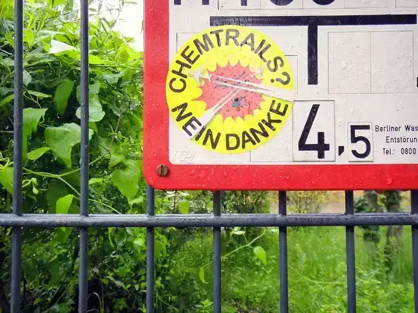
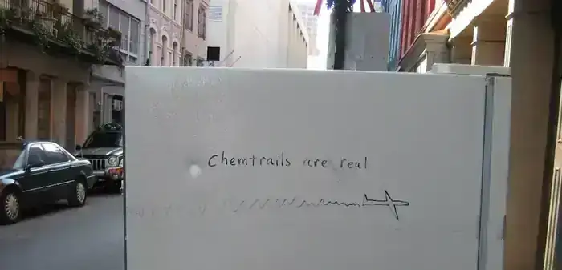

The phenomenon
Aircraft engines emit water vapour and particles. At altitude, the air is often cold enough that the vapour condenses and freezes into ice crystals — a contrail. Whether a contrail persists and spreads depends on humidity and temperature: in dry air it evaporates within seconds, in humid air it spreads into cirrus-like sheets and can last hours.
Maps, diagrams and images





The claim
The chemtrail claim holds that persistent trails are deliberate spraying of aluminium, barium, strontium or biological agents, for weather modification or population control. The evidence offered is the appearance of the trails and the claim that they are new.
The trails are not new — they are documented from the early jet age — and the atmospheric science explains the variation in persistence without any payload. Sampling studies of rainwater, soil and air have not found the claimed materials above background, and the quantities required for a global programme would be enormous and logistically visible.
Documented: contrails, their formation, and their dependence on humidity and temperature.
Documented: the historical record, from the 1940s onward.
Not found: the claimed chemicals, in any sampling study.
Not plausible: the logistics of a covert global spraying programme.
The honest label: debunked.
Why it is in the archive
Because the observation is real and the explanation is physics, which makes it the cleanest case of a claim built on not knowing how the sky works.
Open resources on this topic
- BookChina Begins Openly Using Drones To Spray Chemtrails (Internet Archive, free to read)
- Bookchemtrails-confirmed (Internet Archive, free to read)
- BookChemtrails CD (Internet Archive, free to read)
- PapersOpen-access articles: DOAJ · PubMed Central · Internet Archive Scholar
- BooksPublic-domain and borrowable copies: Open Library · Project Gutenberg · Google Books
Cite this page
Momin, S. (2026). Chemtrails. The Larger World Archive. https://drsamonline.github.io/LARGE_GLOBE/chemtrails.htmlMomin, Sohil. “Chemtrails.” The Larger World Archive, 2026, https://drsamonline.github.io/LARGE_GLOBE/chemtrails.html.Momin, Sohil. “Chemtrails.” The Larger World Archive, 2026. https://drsamonline.github.io/LARGE_GLOBE/chemtrails.html.@misc{chemtrails2026chemtrails,
author = {Momin, Sohil},
title = {Chemtrails},
year = {2026},
howpublished = {The Larger World Archive},
url = {https://drsamonline.github.io/LARGE_GLOBE/chemtrails.html},
note = {Last reviewed 20 November 2026}
}Last reviewed 20 November 2026 · Corrections policy · this page is not peer reviewed
Sources for this page
- Wikipedia, “Contrail” — the physicsen.wikipedia.org
- Wikipedia, “Chemtrail conspiracy theory” — the claim and the rebuttalsen.wikipedia.org
- Wikipedia, “Cirrus cloud” — what persistent contrails becomeen.wikipedia.org
- Wikipedia, “Cloud seeding” — the real weather modificationen.wikipedia.org